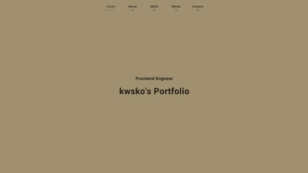
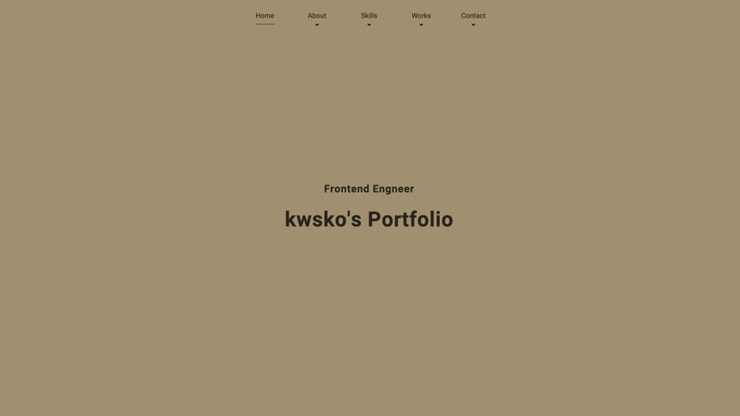
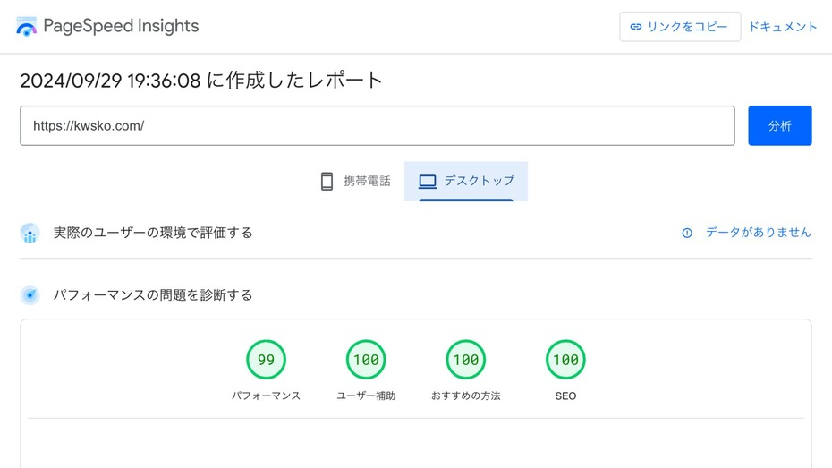
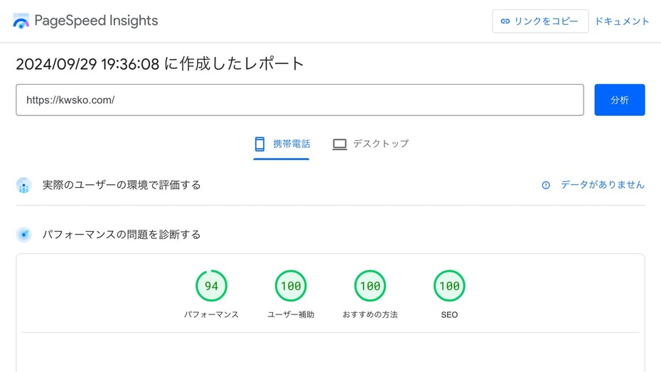

F r o n t e n d E n g n e e r k w s k o ' s P o r t f o l i o
About
1984年生まれ、北九州市在住のフロントエンドエンジニアです。
立命館大学を卒業後、道を求めて禅寺で修行するなど、日本中を旅して回りました。
適職を求めて大工と総務を経験後、現在は天職と思えるエンジニアをしています。
エンジニア歴は5年を越え、Webアプリケーションの開発とDB関連の業務を経験後、複数の上場企業様のコーポレートサイトの運用、構築案件の開発全般を担当してきました。
WordPressをはじめとした多くのCMS環境での開発経験があり、SEO対策およびウェブアクセシビリティへ配慮したサイト制作と自動化ツールの作成を得意としています。
基本情報技術者、2級ウェブデザイン技能士、ウェブ解析士、統計検定3級などの資格を保持、趣味はテニスとキャンプで、最近のブームはLCP対策です。
Skills
スキルレベルの自己評価です。
GPT-4（生成AI）に「あなたはプロのフロントエンドエンジニアです。○○○のスキルのレベル感について、一般的に開発の現場で求められる範囲で、最低レベルを10%、最高レベルを100%として、10%区切りで端的に設定してください」というプロンプトを入力して得た基準に基づいています。
Frontend
- HTML Living Standard
- 80%
- CSS3
- 80%
- Sass
- 60%
- JavaScript
- 60%
- JQuery
- 70%
- Vue.js
- 30%
- Google Apps Script
- 60%
Backend
- PHP
- 30%
- node.js
- 40%
- Express.js
- 40%
- Java
- 20%
- Python
- 20%
Other
- Git/GitHub
- 60%
- WordPress
- 50%
- Photoshop
- 60%
- Office
- 70%
- Apache
- 30%
- CentOS
- 30%
Works
これまでの開発実績の一例となります。
クライアント様の機密情報を保護する必要がある内容について、特定を避けるための処理をしている点、ご理解いただけますと幸いです。
-
 kwsko's Portfolio kwsko's Portfolio
本ページでは、アニメーションやインタラクティブな機能を、jQueryなどの外部ライブラリに頼らず、CSS（SASS）とJavaScript（標準API含む）のみで実装しています。従来のスクロールイベントリスナーによる高負荷な処理ではなく、Intersection Observer APIを使用することで、より軽量でカスタマイズ性の高いWebサイトを目指しました。
また、お問い合わせフォームにはFetch APIを利用し、非同期通信で実装しています。当初はPaaSでデプロイしましたが、SMTPポートの開放に問題があったため、VPS上にCentOSとExpress.jsを用いたWebサーバー環境を構築しました。不慣れな分野で苦労しましたが、サーバーサイドのセキュリティについて学び、実践する良い機会となりました。
GitHubのリポジトリポイント
- マークアップスキル（セマンティックコーディング、SEO対策、アクセシビリティへの配慮など）
- ページ表示速度の改善
- カーキを基調としたシックなデザイン
- 仮想サーバー上に環境構築
- お問い合わせフォームのセキュリティ対策
言語・ツール・環境
HTML, CSS(SASS), JavaScript, Node.js, Express.js, Git/GitHub, VSCode, Figma, GIMP, CentOS, PaaS
ギャラリー
-
 ファーストビュー -
 デスクトップ表示でのPageSpeed Insightsの評価 -
 携帯電話表示でのPageSpeed Insightsの評価
-
A社 コーポレートサイト A社 コーポレートサイトのフルリニューアル
A社コーポレートサイトのフルリニューアル案件にて、開発業務を担当しました。
サイト全体のページ数は、50ページ弱とリニューアルとしての規模は大きくありませんが、構築から量産までを一貫して対応しました。担当
- 与件調査と開発工数見積もり
- ガイドラインレビュー
- CSS設計
- 開発（構築から量産までのコーディングとテスト、.htaccessの作成、Git管理）
成果・実績
- 開発業務の90%以上を単独で遂行しました。
- 共通箇所をモジュール化する提案が受け入れられ、CSS設計から実装、モジュールページの作成を担当、効率的な運用基盤を整えました。
- ウェブアクセシビリティ達成基準のレベルAに可能な限り対応しました。
言語・ツール・環境
HTML, CSS, JavaScript, jQuery, Node.js, Git, WinSCP, VSCode, Photoshop, XD, BackLog
-
B社 ランディングページ B社 ランディングページの作成
運用も行なっているB社のランディングページのコーディングを単独で行いました。
デザイン段階での仕様変更が度重なり、コーディング期間が十分に取れない状況でしたが、ディレクターやデザイナーと連携を密に取り、期限内にコーディングとテストを終えることができました。担当
- 与件調査と開発工数見積もり
- 開発（コーディングとテスト）
成果・実績
- 他の案件に入りながら、5日でコーディングからテストまで終えました。
言語・ツール・環境
HTML, CSS, JavaScript, jQuery, Git, WinSCP, VSCode, Photoshop, XD, BackLog
-
C社 コーポレートサイト C社 コーポレートサイトの運用・構築案件
未経験だったWordPress主体のC社コーポレートサイトの開発業務を2年ほど担当しました。
開発情報が乏しく先任エンジニアがいない状況でしたが、まずは過去の情報の精査とWordPressとPHPの理解に努め、最終的には、テンプレートの作成やプラグインの導入、カスタムタグを用いた機能実装などにも対応しました。担当
- 与件調査と開発工数見積もり
- 要件定義補助、基本設計
- 技術面からの助言（クライアント折衝含む）
- 開発（コーディングとテスト）
- 開発環境整備（マニュアル作成など）
- 育成（コードレビューなど）
成果・実績
- マニュアル整備によって、他のエンジニアが対応しやすい環境を整えました。
- サイト内の数千ページに対するリダイレクトチェックを求められた際、GASでリダイレクトチェックツールを作成し、確認にかかる工数を50%以上削減しました。
言語・ツール・環境
HTML, CSS, JavaScript, jQuery, PHP, WordPress, Git, WinSCP, VSCode, Photoshop, BackLog, AWS
-
D社 コーポレートサイト D社 コーポレートサイトの運用・構築案件
D社コーポレートサイトの開発業務を2年半ほど担当しました。
開発情報が乏しく先任エンジニアがいない状況でのアサインでしたが、まずは過去の情報の精査を行って案件特徴を把握し、早期に適応しました。
リードエンジニアとして、運用案件からLP制作や一部リニューアルまで幅広く対応しました。担当
- 与件調査と開発工数見積もり
- 要件定義補助、基本設計
- 技術面からの助言（クライアント折衝含む）
- エンジニアのアサイン調整
- 開発（コードおよび画像の作成、Git 管理、テスト、公開作業など）
- 開発環境整備（マニュアルや効率化ツールの作成、ローカル環境構築など）
- 育成（コードレビュー、勉強会の実施など）
成果・実績
- マニュアル整備や業務フローの改善を主導して、安定した開発基盤を整えました。
- Pythonにて各サーバーから任意のファイルを自動ダウンロードするツールや原稿からHTMLを自動作成するツールを作成し、特に後者では、90%程度の工数を削減しました。
- 開発工数の見積もりに当たっては、アサイン対象者の力量によって工数を適切に見積もり、遅延なく納品しました。
- 案件理解と技術レベルを評価され、与件についての調査を幅広く任されていました。
言語・ツール・環境
HTML, CSS, bootstrap, JavaScript, jQuery, Python, XAMPP, Git, WinSCP, VSCode, Photoshop, XD, Figma, BackLog
Contact
最後までご覧いただきありがとうございます。
本ポートフォリオページや私に対してのコメントがございましたら、以下のフォームをご利用ください。